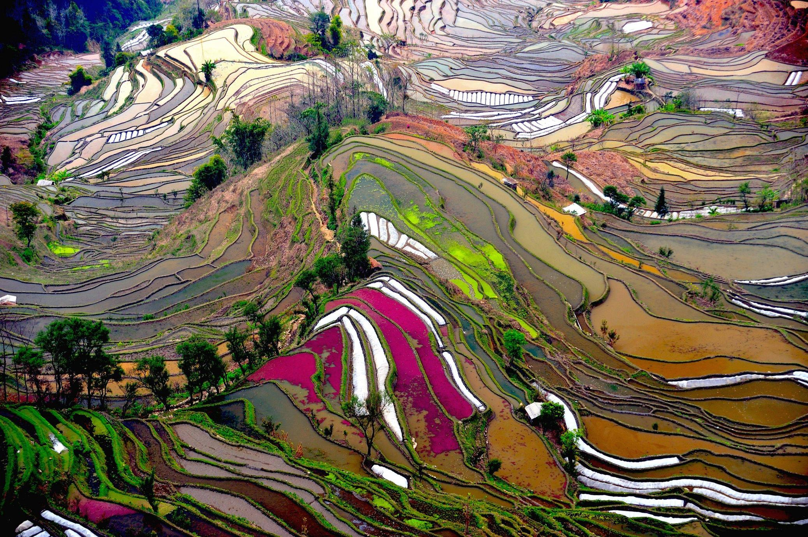

En apprendre plus sur la Chine pour un séjour optimal

La Cité Interdite
"Centre de Pékin, centre symbolique de la Chine et du monde, le palais impérial – Cité interdite – fut durant des siècles le sanctuaire inviolé de la puissance du céleste empereur. Son ordonnancement reflète la structure politique de l'empire du Milieu, mais aussi l'organisation de la cour impériale. Pierre Colombel nous convie à un véritable chemin initiatique à travers ses palais, pavillons et jardins."
"À l'heure où les toitures vernissées de la Cité interdite s'enflamment sous les derniers rayons du soleil couchant, les visiteurs, par milliers, semblent jaillir des salles d'audience, des appartements, des galeries et des jardins, déferlant vers les cinq ponts qui enjambent la rivière aux Eaux d'or, avant de s'engouffrer dans le gigantesque portail du palais impérial de Pékin, la porte du Midi, et se répandre en foule innombrable sur la place Tien an Men."


La vallée de Huanglong
"Pour ceux qui veulent découvrir la Chine, s’émerveiller devant une beauté 100% naturelle, vous devez vous rendre dans le district de Songpan, dans le nord de la région du Sichuan, à Huanglong plus précisément. Ce site est classé au Patrimoine mondial de l’UNESCO depuis 1992 et ce parc national avec ses incroyables bassins d’eau turquoise semble comme suspendu à plus de 3000 m d’altitude."
Description
"La région de Huanglong comprend de nombreux sommets qui sont couverts de neiges éternelles. À ses glaciers intemporels s’ajoutent des écosystèmes forestiers très variés que l’on rencontre avec des formations dites karstiques spectaculaires, d’immenses chutes d’eau et des sources d’eau chaudes. D’une superficie de près de 60.000 hectares, ce site est une curiosité tant géologique que physique : outre ses forêts, la diversité de la faune, ce sont les cascades, les terrasses, les lacs travertins, les chutes, et les affleurements calcaires qui accrochent le regard. La vallée de Huanglong est assez compacte; elle est cernée par trois pics vertigineux, une station étant placée à l’entrée de la vallée pour contrôler les accès. Hors d’une zone délimitée, on rencontre souvent des moines tibétains qui se promènent avec leurs troupeaux."

Reed flute cave
"Une multitude de grottes impressionnantes se trouvent en Asie. Parmi elles, on peut retrouver la plus grande grotte du monde, des sanctuaires religieux, mais aussi des lieux féeriques. La grotte “Reed Flute Cave” est située à Guilin en Chine. C’est un site peu médiatisé et pourtant, il réserve de nombreuses belles surprises à ses visiteurs. Aussi appelée “Palais des Arts Naturels”, c’est un incontournable de tout voyage en Chine."
"Reed Flute Cave ou en français “grotte de la flûte de roseau” a été redécouverte seulement dans les années 40. Pourtant, elle avait été explorée une première fois par la dynastie Tang il y a plus de mille ans. Des inscriptions prouvent leur passage dans ce lieu à cette époque. La grotte existerait depuis plus de 180 millions d’années. Aujourd’hui, elle est visitée chaque jour par de nombreux touristes qui ont l’opportunité d’assister à un spectacle de son et lumière incroyable !"

Le Mont Hua
"Bon, j’espère que vous n’avez pas le vertige… parce que sinon, ce chemin va vous donner des sueurs froides. Ces photos ont été prises près du Mont Hua Shan, qui se situe juste au dessus de de la ville de Xi’an."
"Il s’agit d’un parcours, creusé à même la roche qui commence par des marches, les fameuses Heavenly Stairs (Marches du Paradis), puis se transforme rapidement en chemin de planches fixées sur le flanc de la montagne, pour finir… euh, vous verrez bien ! Mais vous allez être surpris."
"Chaque année, des milliers de personnes prennent ce chemin. Il faut soit être un fan absolu d’escalade et d’expériences grisantes et dangereuses (voir mortelles)… soit VRAIMENT aimer le thé."
"Mais ce qui est sur, c’est que voici une expérience qui ne doit pas laisser indifférent."


La rizière de Longji
"GUIDE DE VOYAGE - Les paysages semblent tout droit sortis d’une estampe chinoise. À partir de Guilin, la rivière Li serpente parmi les collines verticales et les pics embrumés. Plus au nord, les rizières en terrasses de Longji dessinent une œuvre patiemment sculptée par l’homme. Loin du tumulte des grandes villes, bienvenue dans une Chine rurale et verdoyante."
"Comparée aux 24 millions d’habitants de Shanghaï, Guilin, qui n’en compte même pas un million, fait figure de petite bourgade provinciale. Pourtant, les touristes chinois s’y rendent chaque année par millions, au point d’en faire la quatrième destination touristique du pays après Pékin, Shanghaï et Xi’an. Certes, les abords des six lacs alimentés par la rivière Li en plein centre-ville sont plaisants. Le lac Rong accueille deux pagodes, l’une en cuivre représentant le soleil, l’autre en argent représentant la lune.Une ribambelle de ponts enjambent les cours d’eau: passerelles translucides, pont en marbre blanc de Chine, répliques du Golden Gate, de pont vénitien ou de notre pont Alexandre-III."[...]

Le Palais d' Eté
"Construit au XVIIIe siècle, le Yuanmingyuan a été pillé et détruit par les troupes françaises et anglaises en 1860, avant qu’un autre palais ne soit édifié en 1886 par l’impératrice Cixi."
"Au dramatique incendie de Notre-Dame de Paris fait écho dans l’histoire une série de catastrophes ayant détruit ou endommagé des monuments célèbres. En Russie, en Asie, en Europe, Le Figaro se penche sur les reconstructions qui ont suivi, les défis qu’elles ont posés et les polémiques qu’elles ont pu nourrir."
Correspondant à Pékin
"Il y avait, dans un coin du monde, une merveille du monde», mais «cette merveille a disparu», écrit Victor Hugo en 1861. Fou de rage, l’écrivain s’adresse à un officier anglais, le capitaine Butler, pour fustiger la destruction un an plus tôt du Palais d’été de Pékin, dont la [...]"